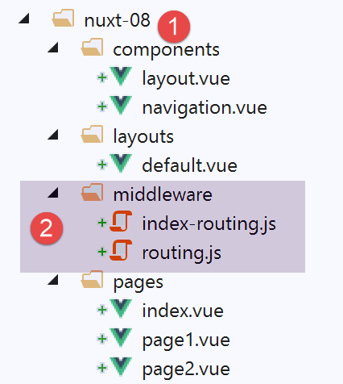

11. Exemple [nuxt-08] : middlewares de routage
Dans cet exemple, nous introduisons la notion de middlewares de routage, des scripts exécutés à chaque changement de route.
L’exemple [nuxt-08] est obtenu initialement par recopie du projet [nuxt-01] :

Les middlewares de routage doivent être dans un dossier appelé [middleware] [2]. Il peut y avoir un routage à deux niveaux :
- un routage appliqué à chaque navigation. Celui-ci fait alors l’objet d’une déclaration dans le fichier [nuxt.config.js] ;
- un routage appliqué à une page particulière, lorsque celle-ci est la cible du routage. Ce routage est alors déclaré dans cette page cible ;
11.1. Routage général
Le fichier [middleware / routing.js] assurera le routage général. Il fait l’objet de la déclaration suivante dans le fichier [nuxt.config.js] :
router: {
base: '/nuxt-08/',
middleware: ['routing']
},
Les middlewares de routage général sont une propriété du routeur (ligne 1). Il peut y avoir plusieurs middlewares de routage. C’est pourquoi ligne 3, la valeur de la propriété [middleware] est un tableau. On voit qu’on n’utilise pas de chemin pour désigner le middleware. Il sera automatiquement cherché dans le dossier [middleware] du projet ;
Le middleware [routing] ne fait ici que des logs :
/* eslint-disable no-undef */
/* eslint-disable no-console */
export default function(...args) {
// qui exécute ce code ?
console.log('[routing], process.server=', process.server, 'process.client=', process.client)
const who = process.server ? 'server' : 'client'
const routing = '[routing ' + who + ']'
// nbre d'arguments
console.log(routing + ', il y a', args.length, 'argument(s)')
// 1er argument
const context = args[0]
// clés du contexte
dumpkeys(routing + ', context', context)
// l'application
dumpkeys(routing + ', context.app', context.app)
// la route
dumpkeys(routing + ', context.route', context.route)
console.log(routing + ', context.route=', context.route)
// le router
dumpkeys(routing + ', context.app.router', context.app.router)
// le router.options.routes
dumpkeys(routing + ', context.app.router.options.routes', context.app.router.options.routes)
console.log(routing + ', context.app.router.options.routes=', context.app.router.options.routes)
}
function dumpkeys(message, object) {
// liste des clés de [object]
const ligne = 'Liste des clés [' + message + ']'
console.log(ligne)
// liste des clés
if (object) {
console.log(Object.keys(object))
}
}
- ligne 3 : on va découvrir que le middleware reçoit un argument : le contexte de l’exécuteur (serveur ou client) ;
- lignes 4-25 : on affiche les propriétés de différents objets pour savoir ce qui est utilisable. On va découvrir que le contexte du middleware est quasi identique au contexte du plugin ;
11.2. Routage pour une page particulière
On veut contrôler la façon dont on arrive à la page [index]. Pour cela, il nous faut introduire la propriété [middleware] dans cette page [index] :
<script>
/* eslint-disable no-undef */
/* eslint-disable no-console */
/* eslint-disable nuxt/no-env-in-hooks */
import Navigation from '@/components/navigation'
import Layout from '@/components/layout'
export default {
name: 'Home',
// composants utilisés
components: {
Layout,
Navigation
},
// cycle de vie
beforeCreate() {
// client et serveur
console.log('[home beforeCreate]')
},
created() {
// client et serveur
console.log('[home created]')
},
beforeMount() {
// client seulement
console.log('[home beforeMount]')
},
mounted() {
// client seulement
console.log('[home mounted]')
},
// routage
middleware: ['index-routing']
}
</script>
- ligne 34 : la propriété [middleware] liste les scripts à exécuter à chaque fois que la prochaine page affichée est la page [index]. Là encore, ces scripts seront cherchés dans le dossier [middleware] du projet ;
Le middleware [index-routing] est le suivant :
/* eslint-disable no-undef */
/* eslint-disable no-console */
export default function(...args) {
// qui exécute ce code ?
console.log('[index-routing], process.server=', process.server, 'process.client=', process.client)
const who = process.server ? 'server' : 'client'
const indexRouting = '[index-routing ' + who + ']'
// nbre d'arguments
console.log(indexRouting + ', il y a', args.length, 'argument(s)')
// 1er argument
const context = args[0]
// clés du contexte
dumpkeys(indexRouting + ', context', context)
// l'application
dumpkeys(indexRouting + ', context.app', context.app)
// la route
dumpkeys(indexRouting + ', context.route', context.route)
console.log(indexRouting + ', context.route=', context.route)
// le router
dumpkeys(indexRouting + ', context.app.router', context.app.router)
// le router.options.routes
dumpkeys(indexRouting + ', context.app.router.options.routes', context.app.router.options.routes)
console.log(indexRouting + ', context.app.router.options.routes=', context.app.router.options.routes)
// d'où vient-on ?
if (context.from) {
console.log('from=', context.from)
}
}
function dumpkeys(message, object) {
// liste des clés de [object]
const ligne = 'Liste des clés [' + message + ']'
console.log(ligne)
// liste des clés
if (object) {
console.log(Object.keys(object))
}
}
Le code de [index-routing] est identique à celui de [routing] et produit les mêmes résultats. Ce qui nous intéresse c’est de voir quand ces deux middlewares sont exécutés.
11.3. Exécution du projet
Nous exécutons le projet. Les logs sont alors les suivants :
C’est le script [routing] qui est exécuté en premier par le serveur :
On retrouve là ce qu’on avait obtenu avec les plugins.
- ligne 15 : la propriété [redirect] est souvent utilisée dans les middlewares : elle permet de changer la cible du routage en cours ;
Puis, parce que la page qui va être affichée est la page [index], le serveur exécute le script [index-routing] et affiche les logs suivants :
Les résultats obtenus avec le script [index-routing] sont analogues à ceux obtenus avec le script [routing].
Une fois la page [index] reçue par le navigateur client, les scripts client prennent la main. Les logs deviennent les suivants :
On voit donc qu’au démarrage de l’application le client n’exécute aucun middleware. Cela veut dire que cela se produira à chaque fois que l’utilisateur forcera un appel au serveur. Les middlewares ne sont exécutés par le client que lors d’une navigation au sein du client. Naviguons par exemple vers la page [page1] (nous sommes sur la page [index]) avec le lien [Page 1]. Les logs sont alors les suivants :
- ligne 2 : le middleware [routing] est exécuté par le client ;
- ligne 4 : notez la propriété [from] : c’est la route d’où l’on vient ;
- ligne 9 : [context.route] est la route où l’on va ;
- lignes 15-18 : affichage de la page [page1] ;
Maintenant revenons à la page [index] avec le lien [Home]. Les logs sont alors les suivants :
- lignes 1-15 : le client exécute le middleware [routing]. C’est normal. Il est exécuté à chaque changement de route;
- lignes 16-29 : le client exécute le middleware [index-routing], ceci parce que :
- [index] est la cible de la route courante (cf ligne 23) ;
- la page [index] a défini un middleware, nommément [index-routing] ;
On voit donc que les middlewares de routage général sont exécutés par le client avant les middlewares attachés aux pages.